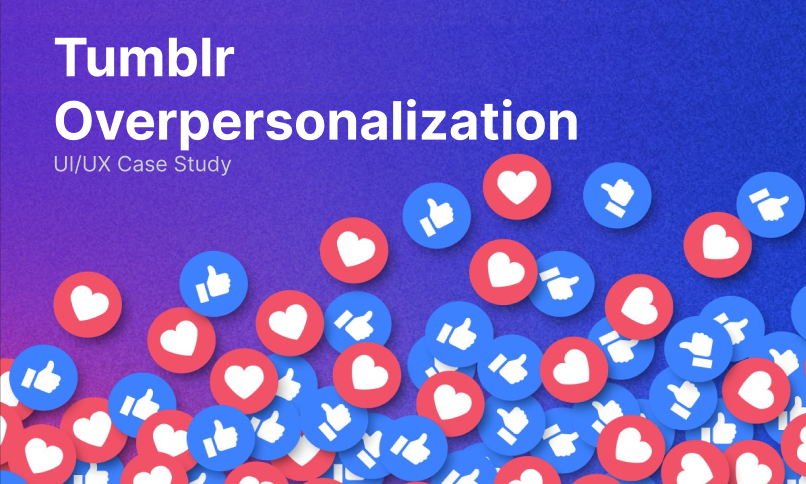
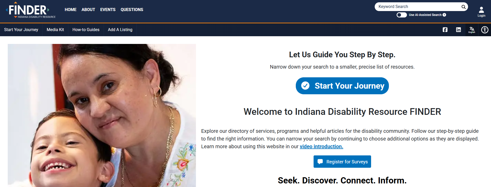
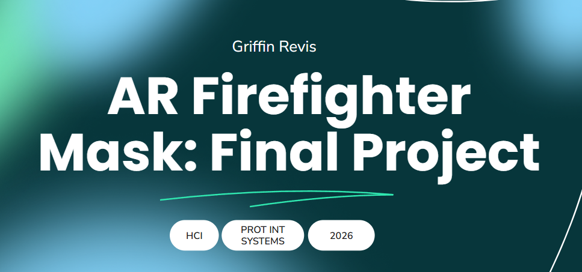
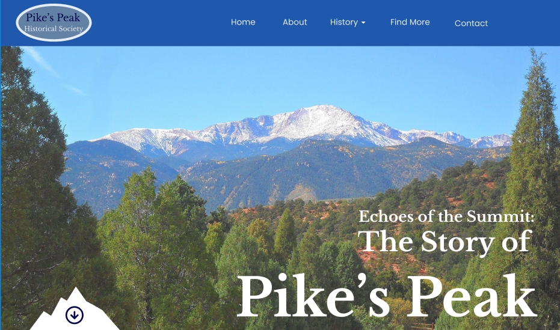

Tumblr Algorithm Study

A UX research study exploring user trust, control, and content discovery within Tumblr’s recommendation system.
View Case StudyA collection of UX research, interaction design, accessibility, web design, and visual design projects focused on creating useful, accessible, and human-centered digital experiences.

A UX research study exploring user trust, control, and content discovery within Tumblr’s recommendation system.
View Case Study
A usability and accessibility evaluation focused on improving how users find, save, and understand disability resources.
View Case Study
A mobile prototype created for an interactive systems course, exploring layout, flow, and digital ordering interactions.
View Project
A concept exploring how augmented reality could support firefighters through hazard awareness, victim detection, and situational guidance.
View Case Study
A WordPress nonprofit website created as a capstone project, focused on content organization, visual design, and CMS experience.
Unfortunately, This website is no longer in use, and is not accessible.

A responsive web project focused on mobile layout, content structure, and presenting information about the Buffalo River.
My first ever Web Design project.
View Project
A nonprofit website concept designed around conservation, wildlife protection, and persuasive digital storytelling.
View Project
A nonprofit website concept designed around conservation, wildlife protection, and persuasive digital storytelling.
View Project
Visual advertisements created for RŌBER Cocktails + Culinary, combining layout, photography, typography, and brand presentation.
Published in Bon Appetit Magazine Oct. 2025 Edition.
View Project